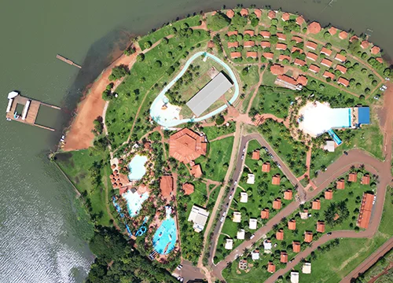

História
Localizado às margens do Rio Grande, na cidade de Fronteira (MG), o Náutico Clube
Fronteira
é
um dos maiores complexos de lazer do interior de Minas Gerais.
O clube oferece uma estrut ura completa de esportes aquáticos, piscinas, hospedagem, eventos e natureza
exuberante, sendo o destino ideal para quem busca descanso, diversão e bem-estar.
Desde sua fundação, o clube tem o objetivo de proporcionar momentos inesquecíveis para famílias e amigos,
promovendo o contato com a natureza e o espírito esportivo.

O Náutico Clube Fronteira nasceu do sonho de transformar as margens do Rio Grande, em Fronteira (MG), em um
espaço de lazer e convivência familiar. O local, que antes era apenas um ponto de encontro para pescadores,
começou a ganhar forma quando seus fundadores decidiram criar um clube voltado ao descanso, à natureza e aos
esportes aquáticos. Assim, surgiram as primeiras
áreas de camping, quiosques e espaços simples,
mas cheios de vida.
.jpg)
Com o passar dos anos, o
clube cresceu e se modernizou. Foram construídas piscinas, chalés, restaurantes
e uma marina, transformando o Náutico em um dos principais polos turísticos e de
lazer da região do Triângulo Mineiro. A cada nova ampliação, o espaço atraía mais
visitantes, conquistando famílias de diversas cidades vizinhas e se tornando sinônimo
de diversão e qualidade de vida.